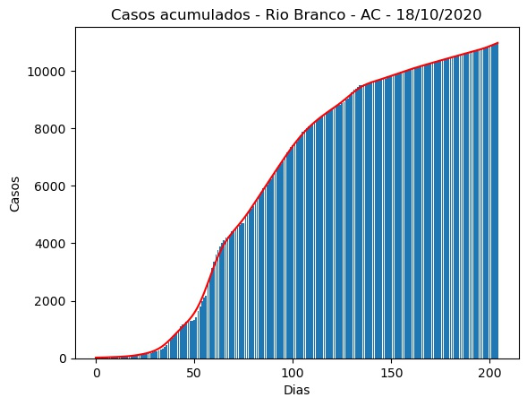
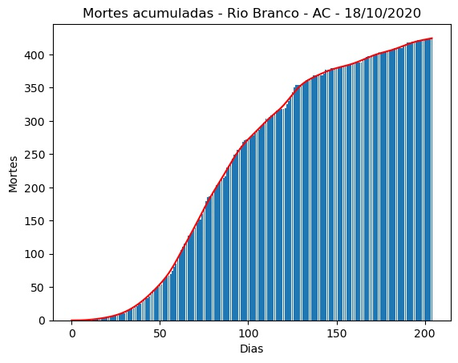
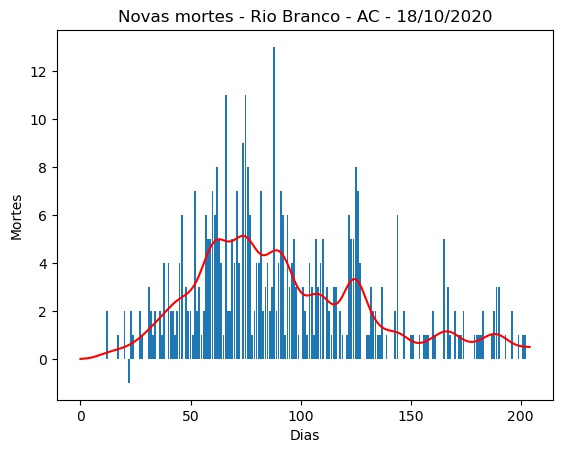
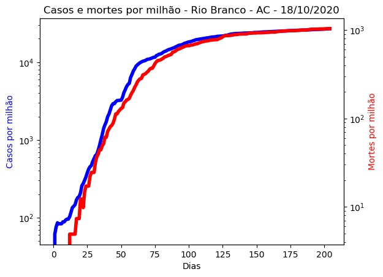
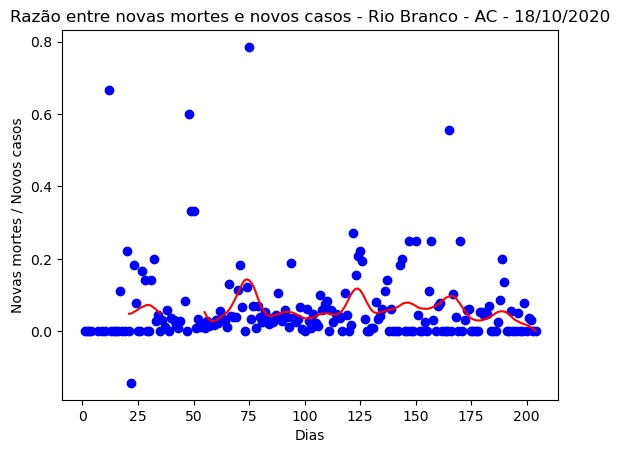
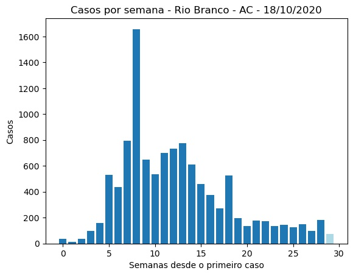
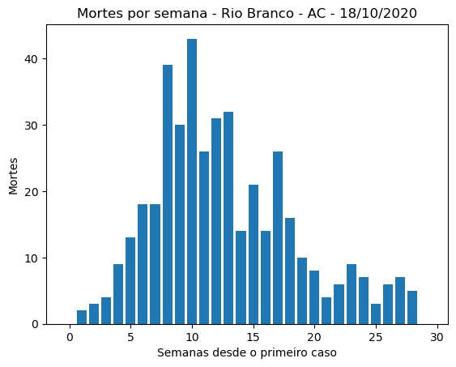
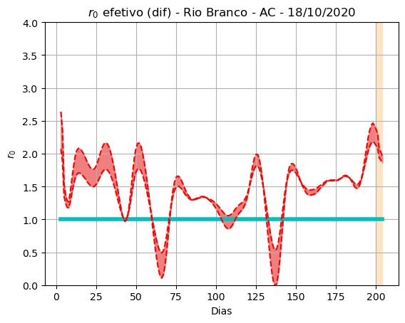
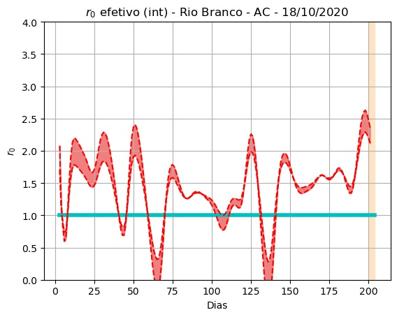
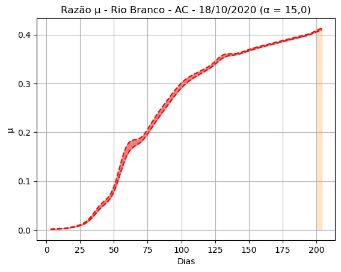

Rio Branco - AC - 18/10/2020.
Detalhes técnicos, aqui. Clique aqui para uma versão em PDF desta análise.
População: 407.319.
Início e fim da série: 2020-03-27 e 2020-10-17. (205 elementos - 29 semanas e 2 dias).
Número de casos totais e mortes: 10.980 e 424. (26.957 e 1.041 por milhão de habitantes, respectivamente.)
r0 (integral) efetivo médio (duas últimas semanas - três dias de atraso): 2,01 (std = 0,42).
Último intervalo para r0 (três dias de atraso): (2,12 : 2,35).
Limiar imunidade de grupo nR (baseado no valor de r0 (integral) efetivo médio) = 0,50.
Previsão do número total de casos para os próximos 5 dias: 11.007, 11.034, 11.061, 11.088, 11.115.
 


 
 
 
